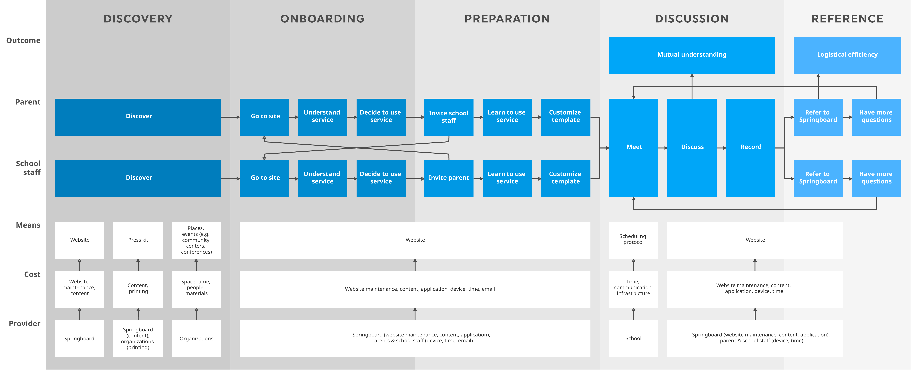
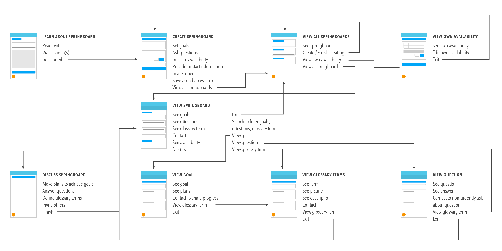

Springboard
Get the conversation started
Springboard is a service that helps immigrant parents navigate an unfamiliar school system through a template for initiating conversation with school staff.
Project Details
| Time Frame | Team Members |
|---|---|
| 6 months | 3 |
Personal contributions
- Secondary Research
- Survey Design
- Competitive Assessment
- Interviews
- Documentation
- Visual Design
- Concept Development
- User Flow
- Service Blueprint
- Interface Design
- HTML/CSS Development
Challenge
Barriers to communication are barriers to educational equity
Parental involvement significantly impacts a student’s emotional well-being and academic success. Communication with school staff is an important aspect of involvement, but immigrant parents face barriers to involvement.
Language
Lack of a common language hinders mutual understanding and the parent’s confidence to express themselves.
Culture
The procedures and roles of school staff differ across cultures, making it difficult for a parent to navigate a new school system.
Assumptions
Parents might have availability or resource constraints that aren’t relayed to school staff and thus not accommodated.
Approach
How might we improve the logistical efficiency of communication and encourage mutual understanding between teachers and immigrant parents?
Given the barriers of language, culture, and assumptions, our team sought to improve the logistical efficiency of communication and encourage mutual understanding between teachers and immigrant parents.
This goal of our research was to identify existing problems with the communications between immigrant parents and the schools that their children attend, to generate insights and to inform design principles for our future product.
Methodology
Secondary research
- Literature review
- Semi-structured interviews with 3 experts: 2 education professors and a school counselor
- Competitive assessment of Parent-Teacher Home Visits
Data collection
Survey
We used surveys to find out what media people use and prefer to use to communicate, as well as the content and goals of those communications.
Online Discussions
When distributing surveys on Reddit, we found that many users participated in comment threads of our postings. These anonymous posts revealed unfiltered feelings parents and teachers had.
Artifact inquiry
This method was designed by us as a way to investigate communications that have already occured. It draws elements from artifact analysis, contextual inquiry, and narrative research. We spoke to teachers and immigrant parents and they showed us emails, notes, and newsletters they sent or received.
Research insights
- Teamwork between teachers and parents requires mutual trust and respect.
- Parents and teachers have limited time to dedicate to effective communication.
- Constructive communication requires sensitivity to both culture and circumstance.
- Current infrastructure doesn't adequately support communication between immigrant parents and teachers.
- Inability to prioritize information leads to simultaneous information overload and information blindness.
Evaluation
To learn how to build a good parent teacher relationship, we created 7 prototypes that targeted different aspects of communication, such as how negotiations are structured, which physical and digital mediums best met the needs of a discussion, and to what extent we needed to guide conversations as the school year progressed.
Key findings
- Over-regulating negotiation with a set of rules is restrictive and unnatural
- Investment in a negotiation increases the amount of payoff or fallout
- Revealing reasons and constraints can build mutual understanding
- Choosing from a set of options is much easier than coming up with your own
- Micromanaging parents on top of students may be a high price for teachers
Service Design
Our investigations and evaluations led to the creation of Springboard, a service for helping immigrant parents start conversations with school staff. This is what a user's journey looks like with Springboard:
Service Blueprint
A User's Journey
Discovery
Parents and school staff might hear about Springboard through community centers, conferences, or word of mouth.
Onboarding
Parents and school staff learn about how Springboard enables them to join forces to support a child through informational content on our multilingual website.
Preparation
The parent fills out the online template with their goals, questions, and availability. School staff may also fill out such information.
Discussion
The parent and school staff come together to have a conversation about the parent’s goals and questions. An interpreter might input the plans and answers in each party’s respective language.
Reference
After the initial meeting, parents and school staff can view and share the results of their meeting online. The new relationship gives the student a cohesive network of support.
Mobile Design
A major part of the Springboard service happens with the aid of a mobile-first web application.
Inside Springboard Web App
Goals
Parents express their goals, leading to collaborative plans that allow them to be involved in their child’s education.
Questions
Parents ask about specific scenarios and unfamiliar terms, building up confidence to leverage school resources.
Availability
Parents and school staff share their availability constraints, allowing them to connect at mutually convenient times.
Key Features
Multilingual support
Users can comfortably express themselves in any language.
Text-to-speech
The entire interface is accessible to non-readers.

Suggestions
Prompts reveal the range of issues school staff can assist parents with.
Glossary
Parents can learn about staff roles and unfamiliar school terms.
Site Map
Mobile Prototype
This is a prototype of the mobile version of Springboard. The prototype has no back-end. You should treat every page as if it has no context of what has happened on other pages.